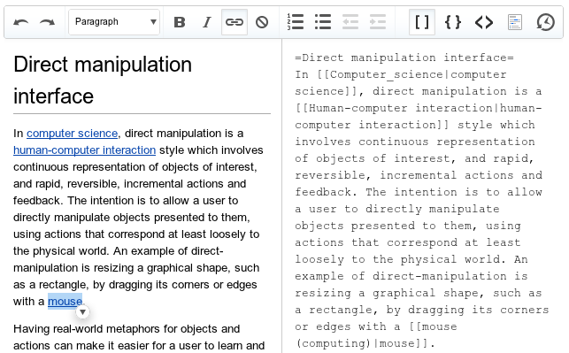

也紀念我們永遠的朋友 李士傑先生（Shih-Chieh Ilya Li）。
Wikipedia 公開視覺化編輯器原型版本供外界測試
為了替服務成長重新注入活力，Wikipedia 日前公開了新視覺化編輯器的第一個版本。儘管目前只是原型版本，此一新介面仍稱得上 Wikipedia 史上最重要的改變。Wikimedia 基金會希望運用這套視覺編輯器，讓編輯該線上百科全書就像在 Wordpress 或 Blogger 等部落格平台上撰寫文章，從而吸引新的 Wikipedia 貢獻者。
這套視覺化編輯器仍屬於開發者原型版本，目的是讓軟體開發者試玩後加以協助改善。編輯器提供的功能選項僅限於預定格式的列表，以及插入粗體、斜體、網路連接。此外還提供一系列格式的下拉選單，可以省去標注文章標題的步驟。
▲維基百科視覺化編輯器，目前仍處於開發者原型版本來源。來源：Wikimedia 部落格：Help test the first visual editor developer prototype，作者 howief，CC-BY-SA 3.0 Unported
發展這套視覺化編輯器的明確目標之一，是允許用戶在編輯器內建立或編輯文章，或者改採傳統的 wiki 標記語言。進階用戶可以透過選項，在 wiki 語法、HTML 或 JSON 上看見自己所做出的更動。支援雙重模式是這項專案最主要的技術挑戰。
根據 Wikipedia 基金會的說法，另一項技術挑戰來自於對 wiki 標記語言的相容性支援，由於 wiki 標記語言複雜又極具表現力，且其各項層面的功能都被廣泛運用，因此所有功能都必須在此視覺編輯器中正確地提供支援。
目前提供編輯器沙箱的測試原型讓用戶嘗試與找臭蟲。在 2012 年 6 月開始整合到 Wikipedia 之前，新編輯器將持續改善，後續版本將納入圖片工具等功能。
Wikipedia 英文版本活躍用戶數持續下跌，是該服務需要這套新編輯器的主要原因。Wikipedia 的編輯者數目從 2007 年達到高峰後便開始下滑。根據 Wikimedia 基金會的 2011-12 年度計畫，該組織認為參與度下滑是 Wikimedia 專案面臨的首要問題，而因應之道是開發新功能與改善專案。視覺編輯器這項顯著的修改，卻是姍姍來遲。
Jimmy Wales 與 Larry Sanger 於 2001 年正式推出 Wikipedia。一直到推出的 2 週前，他們才首次聽聞 wiki，Sanger 隨即對 wiki 的簡潔留下深刻印象，認為此一開放且簡單的格式是開發內容的終極方式。在當時，wiki 顯得革命性十足。
然而 10 年後，網路用戶逐漸習慣圖形介面，wiki 語言對多數用戶而言顯得難以學習與使用。 Wikimedia 基金會執行董事 Sue Gardner 指出，Wikipedia 創立時，網際網路並不好用，編輯 wiki 相形之下不會比較困難。然而今天大多數的線上互動形式都比編輯 wiki 文章簡單許多，因此產生了進入障礙。
該基金會希望視覺編輯器能帶來更多新的編輯者。回顧 2006 到 2007 年，滿腔熱情卻缺乏經驗的新編輯者大量湧入，現有編輯無法妥善指導照應這些新手，卻以模板和自動回應等形式升高進入門檻。
這一次，Wikipedia 基金會將有所改變。往後編輯者不必了解晦澀難懂的代碼，也能享受貢獻文章的樂趣。至於此舉是否有助拉抬下滑的編輯者數目，仍有待觀察。順利的話，Wikipedia 的資深編輯群想必將再次忙得不可開交。
相關網址
- Wikipedia 的改變：眼見為憑
https://www.economist.com/blogs/babbage/2011/12/changes-wikipedia - Wikimedia 視覺化編輯器測試中
https://www.h-online.com/open/news/item/Wikimedia-testing-visual-editor-1394872.html - Wikimedia 基金會預覽簡化視覺編輯器
https://www.theverge.com/2011/12/15/2637734/wikimedia-previews-simplified-editor - Wikipedia 如今也有視覺化編輯器
https://www.ciol.com/News/News/News-Reports/Now-Wikipedia-has-visual-editor-too/157810/0/ - 協助測試視覺化編輯器開發者原型的第一個版本
https://watchingthewatchers.org/indepth/1400660/help-test-first-visual-editor-developer
您也許有興趣閱讀以下文章:
- Wikipedia 漸採 MariaDB 來代換 MySQL - 2013-01-14
- Wikipedia 推出官方版 Android 應用程式 - 2012-02-03
- Wikipedia 創辦人 Jimmy Wales 4/7 公開演講 - 2007-11-27
- Wikipedia：一場有著開放精神的社會革命，正在進行中 - 2006-04-27
- 從Wikipedia看見開放的力量 - 2006-03-23
自由軟體鑄造場電子報 : 第 187 期 PaaS：程式語言開發在雲端「Programming in Paas」（上）
標籤: Wikipedia, Wikipedia 基金會, Wordpress, Blogger,
分類: 源碼新聞
專欄總覽


E-Mail：contact@openfoundry.org Address：台北市南港區研究院路2段128號 中央研究院資訊科學研究所 . 隱私權條款. 使用條款